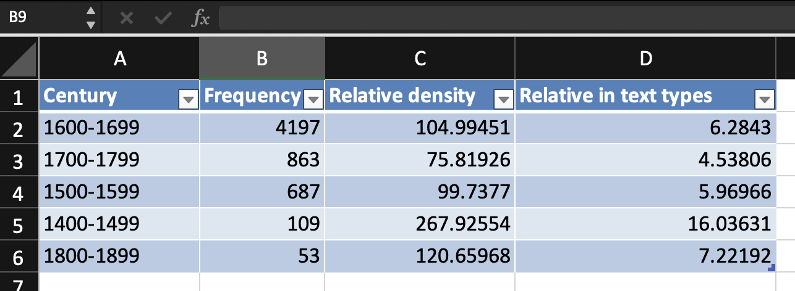
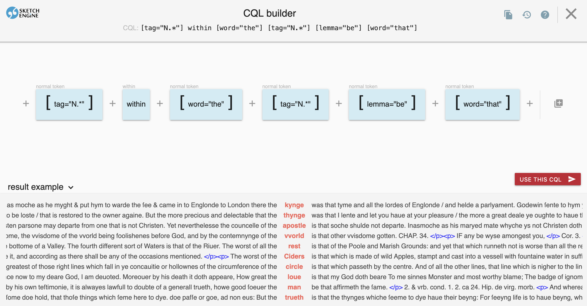

generate line charts for both absolute and relative frequencies
Creating Data Tables

Make a table for further analysis
Line Charts: Absolute Frequency
Visualising absolute frequency development
Line Charts: Relative Frequency
Visualising relative frequency development
Step 5: CQL Analysis
Query specifically for the noun in the construction using CQL
Hint: use the operator within preceding the construction
Objective: Identify the most frequent nouns used in the construction
Most Frequent Nouns

Analysis of lexical preferences
Extended frequency analysis
Detailed breakdown of noun frequencies
Diachronic Noun Analysis
How noun preferences change over time
Historical Comparison: 1400–1499
Most frequent nouns in early period
Historical Comparison: 1800–1899
Most frequent nouns in later period
Summary
Theoretical framework: EC-Model for understanding syntactic change
Methodological skills: Corpus querying, frequency analysis, CQL
Research workflow: From hypothesis to interpretation
Historical perspective: How constructions evolve over centuries
Cognitive perspective: How individual authors’ minds differ and shape language change
References
Schmid, Hans-Jörg. 2020. The Dynamics of the Linguistic System: Usage, Conventionalization, and Entrenchment. Oxford: Oxford University Press.
Schmid, Hans-Jörg, and Annette Mantlik. 2015. “Entrenchment in Historical Corpora? Reconstructing Dead Authors’ Minds from Their Usage Profiles.”Anglia 133 (4): 583–623.